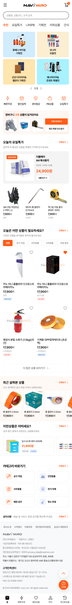
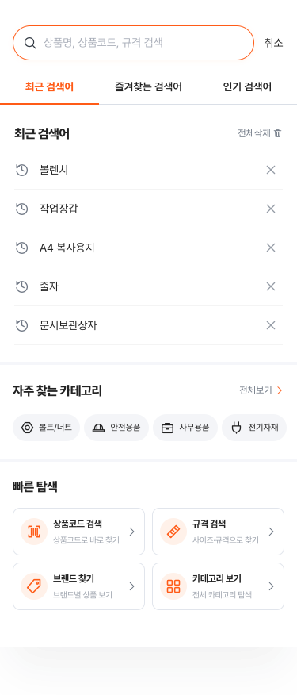
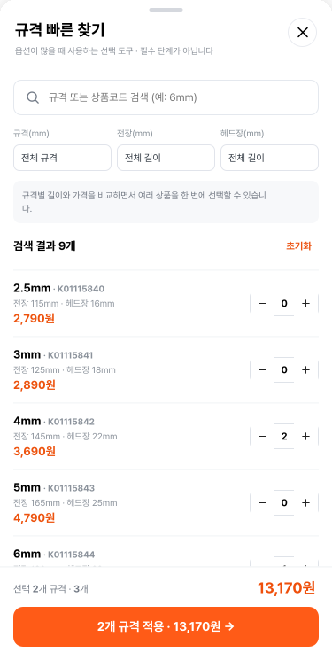
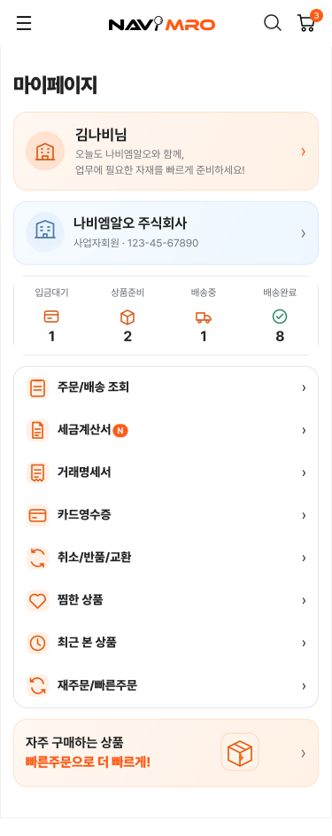
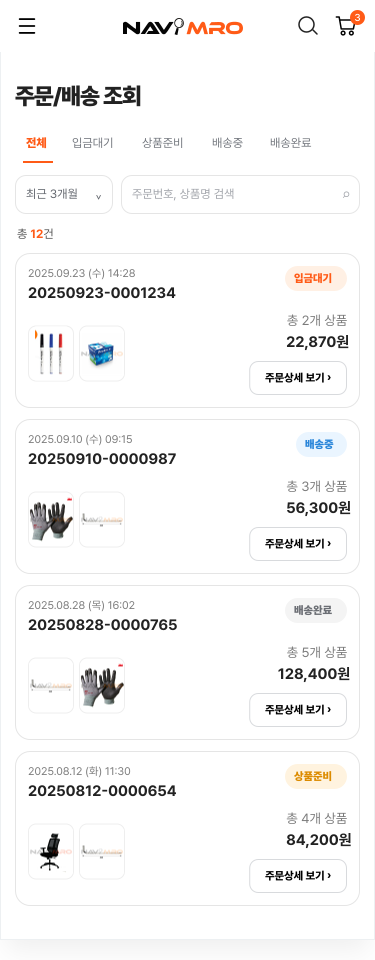
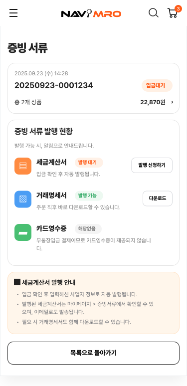

현장의 목소리
2019년 자사 내에서 수집한 VOC 수백 건을 분석하고, 증빙 발급·입금 계좌·상품 추천·장바구니 조건 등 반복 문의를 구매 흐름 기준으로 묶었습니다.
2019년 자사 VOC 분석2019년 자사 내에서 수집·분석한 반복 VOC를 출발점으로, 2026년 현재의 구매·업무 처리 흐름을 다시 점검했습니다. 고객이 상품을 찾고 고르고 구매한 뒤 증빙까지 마치는 전 과정을 하나의 구매 흐름으로 연결한 제안입니다.

2019년 자사 내에서 수집한 수백 건의 VOC를 수작업으로 분석하며, 고객 문의가 특정 기능 하나보다 구매 전후의 연결 구간에서 반복된다는 점에 주목했습니다. 이후 직접 만든 모바일 화면과 현재 공개된 구매 안내를 대조하며 구조를 다시 잡았습니다.
2019년 자사 내에서 수집한 VOC 수백 건을 분석하고, 증빙 발급·입금 계좌·상품 추천·장바구니 조건 등 반복 문의를 구매 흐름 기준으로 묶었습니다.
2019년 자사 VOC 분석공식 이용 가이드·FAQ의 검색, 옵션, 장바구니, 결제, 주문 조회 경로와 모바일 시안을 대조했습니다.
공개 서비스 흐름 / 시안 점검탐색부터 증빙까지의 화면 위계와 연결을 재설계하고, 예상 효과를 정리했습니다.
가설 기반 제안B2B 구매자는 상품만 주문하는 것이 아닙니다. 규격을 확인하고, 여러 품목을 담고, 결제 조건을 이해하고, 이후 회계 증빙까지 처리해야 합니다. 각 기능이 존재해도 그 사이의 확인과 되돌아감이 많으면 구매는 끝나지 않습니다.
과거 문의는 반복되는 불편의 단서입니다. 현재 흐름은 그 불편이 어디에서 발생할 수 있는지 점검하는 맥락입니다. 두 자료를 같은 시점의 정량 성과처럼 합치지 않았습니다.
2019년 자사 VOC 분석 당시 정리한 문의 규모입니다. 원본 집계표는 이번 ZIP에 포함되지 않아 정확한 모수·기간·중복 여부는 재확인 대상입니다.
공식 이용 가이드와 FAQ에는 검색·옵션 수량 선택·장바구니 확인·주문/결제·주문조회가 단계별로 안내됩니다. FAQ는 현금성 결제의 세금계산서 발행 시점과 수신 메일도 별도로 설명합니다.
출처: 2019년 VOC 분석 자료 및 나비엠알오 공식 이용 가이드, 공식 FAQ (2026.10.01 확인). 현재 서비스의 전환 성과나 실제 이용자 행동 데이터로 해석하지 않았습니다.
정보를 빼는 대신 우선순위를 정하고, 화면 하나의 개선보다 앞뒤 단계가 이어지는 방식을 바꿨습니다. 아래 가설은 모두 검증 전입니다.
고객이 상품을 찾고, 규격을 고르고, 결제한 뒤 증빙을 확인하는 각 순간에 필요한 정보와 행동을 이어지도록 설계했습니다.
홈의 진입점, 검색어와 카테고리, 결과의 필터를 하나의 탐색 과정으로 봅니다.



상품 상세의 정보 위계를 정리하고, 다중 옵션·장바구니에서도 선택 상태를 잃지 않도록 했습니다.





배송·결제·입금·증빙 조건을 주문 단계에서 읽고, 완료 후에는 다음 행동을 안내합니다.


구매 완료가 업무 완료는 아닙니다. 주문 상태에서 상세와 서류까지 이어지는 경로를 설계했습니다.




왼쪽은 VOC와 현재 흐름에서 도출한 문제 가설이며, 오른쪽은 이를 다루기 위한 설계 제안입니다. 실제 개선 효과는 아직 측정하지 않았습니다.
| 구매 단계 | Before · 문제 가설 | After · 설계 제안 |
|---|---|---|
| 탐색 | 상품명·규격을 알지 못하면 검색 결과를 반복 탐색 | 검색어·카테고리·필터·추천의 역할을 분리하고 연결 |
| 선택 | 상세·옵션·장바구니에서 수량과 규격을 재확인 | 선택 상태와 금액을 단계마다 이어서 표시 |
| 결제 | 결제수단별 입금·증빙 조건을 별도 안내에서 확인 | 결제 맥락에서 조건을 설명하고 완료 후 다음 행동 제시 |
| 업무 처리 | 주문·배송·증빙 상태의 확인 경로를 다시 탐색 | 마이페이지에서 주문 상세와 서류 상태를 연결 |
아래는 개선안에 따라 기대하는 변화의 방향입니다. 실제 측정 결과나 달성 수치가 아닌 기획 가설입니다.
옵션·수량·금액을 단계마다 이어서 보여주면 결제 전 재확인이 줄어들 것으로 예상합니다.
터치 수 ↓ 구매 완료까지의 시간 ↓규격과 수량을 한곳에서 비교하면 잘못 담거나 장바구니에서 다시 수정하는 경우가 줄어들 것으로 예상합니다.
옵션 선택 오류율 ↓검색·카테고리·필터의 기준을 정리하면 필요한 상품에 도달하기 쉬워질 것으로 예상합니다.
상품 탐색 성공률 ↑ 주문 완료율 ↑결제 조건과 서류 상태를 구매 전후에 안내하면 발행 시점과 확인 위치에 대한 문의가 줄어들 것으로 예상합니다.
증빙 관련 CS 문의 ↓방향성은 과거 VOC와 화면 흐름을 바탕으로 세운 예상입니다. 수치나 성과로 해석하지 않습니다.
정보를 줄이는 대신,
사용자 플로우에 맞게
다시 놓았습니다.
VOC를 문의 유형 그대로 화면 기능에 대응시키면 ‘증빙 메뉴를 추가하자’처럼 부분 최적화에 머무르기 쉽습니다. 이번에는 고객의 최종 목적을 ‘상품 선택 → 구매 → 업무 처리 완료’로 정의하고, 문의가 발생하는 지점을 구매 흐름의 끊김으로 해석했습니다.
그래서 상세에서는 구매 결정 정보를 먼저, 결제에서는 수단별 조건을 먼저, 주문 후에는 서류 상태를 먼저 보이도록 했습니다. 현재 제안의 강점은 화면 수가 아니라 앞 단계의 선택과 뒤 단계의 확인이 연결된다는 데 있습니다.
이 제안은 과거 VOC와 현재 흐름을 연결해 우선순위를 정한 기획 결과입니다. 다중 옵션 구매와 세금계산서 확인처럼 업무 영향이 큰 구간을 먼저 설계했고, 실제 효과는 서비스 적용 후 지표와 문의 변화를 통해 확인해야 합니다.